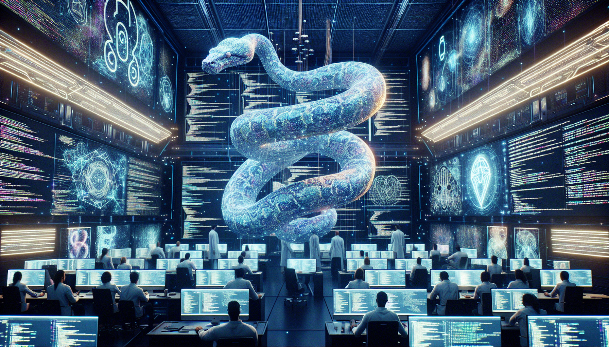

Python and the Future of AI
As a Python student, I am constantly amazed by the capabilities and potential of this programming language. With its user-friendly syntax and vast library of tools and resources, Python has become a popular choice for developers working on artificial intelligence (AI) and machine learning projects.
One of the key reasons why Python is so well-suited for AI is its simplicity and versatility. The language's clean and readable code makes it easy to prototype and test different algorithms, while its wide range of libraries such as TensorFlow and Keras provide powerful tools for building and training AI models. Additionally, Python's extensive community and active development ensure that it will continue to evolve and adapt to the rapidly growing field of AI. With its continued advancements, Python is set to play a major role in shaping the future of AI and pushing the boundaries of what is possible in this exciting field.